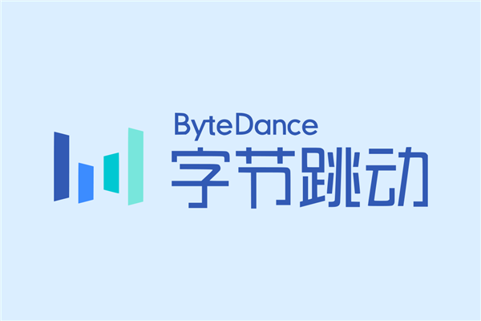
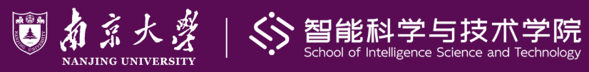

荣誉主席Honorary Chair
周志华（南京大学）Zhi-hua Zhou (Nanjing University)
周志华（南京大学）Zhi-hua Zhou (Nanjing University)
高阳（南京大学）
俞扬（南京大学）Yang Gao (Nanjing
University)
Yang Yu (Nanjing University)
张伟楠（上海交通大学）
白磊（上海人工智能实验室）Weinan Zhang
(Shanghai Jiao Tong University)
Lei Bai (Shanghai AI Laboratory)
杨天培（南京大学）Tianpei Yang (Nanjing University)
TBDTBD
TBDTBD
组织架构信息将随会务推进持续补充，新增主席与委员名单将以官网更新为准。Committee details will be updated as preparation progresses. Newly confirmed chairs and committee members will be published on the official website.
SponsorsSponsors
感谢合作伙伴对大会的支持，以下为本届大会赞助商。We thank our partners for supporting the conference. The following are sponsors of this edition.
GOLDGOLD

